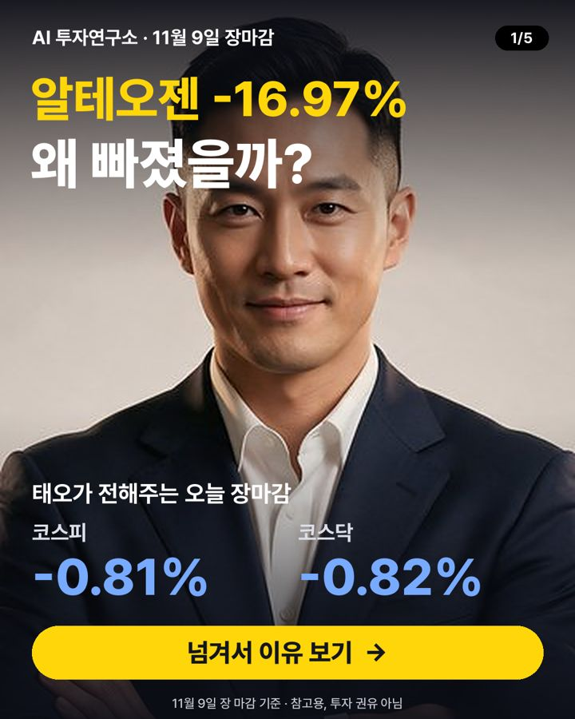

11월 9일 장마감 요약 — 코스피 -0.81%, 코스닥 -0.82%
2026-11-09 장 마감 기준 · 진행 강태오 (리스크 점검)

오늘 코스피는 5,018.85로 -0.81%, 코스닥은 638.97로 -0.82% 마감했어요. 대형주 78종목 중 11개가 오르고 65개가 내렸어요. 원/달러 환율은 1,363원이에요.
지수 흐름
| 종가 | 하루 | 1주 | 1달 | |
|---|---|---|---|---|
| 코스피 | 5,018.85 | -0.81% | -14.34% | -21.39% |
| 코스닥 | 638.97 | -0.82% | -12.99% | -24.76% |
많이 오른 종목
- 한미약품 +2.79% · 478,500원
호재미국 머크에 1조원 기술수출한 지방간염 후보가 임상 2b상 성공했어요 - 삼성화재해상보험 +2.33% · 616,000원
호재영국 특수보험사 캐노피우스 경영권을 인수해 해외 공략에 나섰어요 - NC +1.93% · 211,500원
뉴스관련 기사: 엔씨 '아이온2', 1주년 맞아 대규모 개편…레벨 확장·하우징 도입 (디지털데일리) - 삼성에스디에스 +1.40% · 218,000원
호재하나증권이 목표주가를 올려 매수 의견을 유지했어요 - 셀트리온 +1.20% · 211,000원
뉴스관련 기사: 셀트리온 스테키마, 유럽서 소아 치료 범위 넓힌다 (헤럴드경제)
많이 내린 종목
- 알테오젠 -16.97% · 166,900원
악재미국 약가 규제 강화와 유럽 특허 분쟁 우려로 지난 9일 16% 급락한 코스닥 시가총액 1위 알테오젠(196170)이 10일 … - 삼성SDI -13.80% · 409,000원
중립BMW그룹이 삼성SDI와 LG에너지솔루션으로부터 차세대 전기차용 배터리 셀을 공급받기로 했다. - 에코프로 -11.36% · 60,100원
중립에코프로비엠이 투자업 종속회사인 PT 에코프로 BNSI 인베스트먼트(PT ECOPRO BNSI INVESTMENT) 주식 8억… - 에코프로비엠 -10.30% · 75,800원
악재에코프로비엠(247540)이 인도네시아 현지 자회사 유상증자에 약 6271억원을 투입한다. - 삼성전기 -8.84% · 815,000원
중립모건스탠리, 삼전 19%·하닉 목표가 38% 낮춰 삼성전자 38만 1000원→30만 9000원 SK하이닉스 260만 원→160…
누가 사고 팔았나 (순매수)
| 외국인 | 기관 | 개인 | |
|---|---|---|---|
| 코스피 | +4,439억 원 | +4,642억 원 | -13,947억 원 |
| 코스닥 | -1,479억 원 | +2,147억 원 | -556억 원 |
내일 체크 포인트
- 외국인 흐름 — 오늘 코스피에서 +4,439억 원 순매수
- 국제유가 — 최근 한 달 -9.19%
- 미국 10년 금리 4.99% · 공포지수 VIX 20.1
- 20일 이동평균선 위에 있는 대형주 21/78종목
이 글은 공개된 시세·수급 데이터와 그날 뉴스 제목을 정리한 참고 자료이며 투자 권유가 아닙니다. 시세는 거래소 종가 기준이고, 투자 판단과 결과의 책임은 본인에게 있습니다.